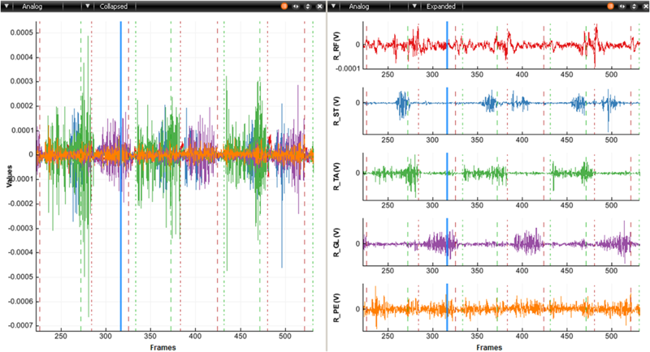
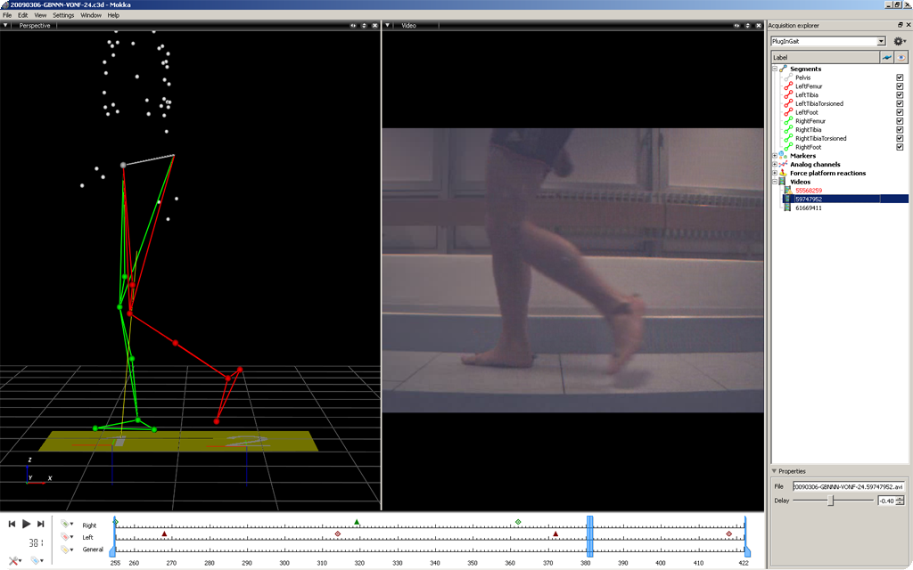
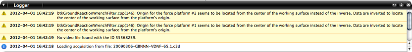

General use
- The main window can be split in horizontal and/or vertical way using the double-arrow in the right top menu. Each successive window can be split again.
- Each window can be used as 3D, Chart or Media view or as a Console logger
3D Viewer
- The view can be changed between perspective or orthogonal from the left top menu.
- Select marker using the left click. Ctrl + left click can be use to select more than one marker. Shift + left click create a selection box and toggle marker selection (selection markers if not selection, or remove them of the selection if selected).
- To display a marker trajectory, click on the a marker by using the combination Shift + Ctrl + Left mouse button.
- Use the right click on the main window to quickly create a new segment, select, unselect markers, delete selected markers, track or untrack selected markers, insert events or change the playback speed.
- Staying over a marker will show you a balloon with its label.
Note: For MacOS X user, the Ctrl is replaced by the command key.
How to navigate in the 3D perspective view
- Use the left click to rotate.
- Press on the wheel mouse or use Alt+left click to move up, down, left or right.
- Use the wheel mouse forward and backward to zoom in and out
How to navigate in the 3D orthogonal view
- The view can be change for top, bottom, left, right, back or front from the newly displayed drop-down menu
- Press on the wheel mouse or use Alt+left click to move up, down, left or right.
- Use the wheel mouse forward and backward to zoom in and out.
Chart Viewer
- The Chart viewer allows the visualization of point and analog data. Points have 3 dimensions and analog channel have 1 dimension.
- A point can correspond to the coordinates of a marker, or the component of a model output (angles force, moment, power, etc.).
- An analog channel can be the raw data of force-plates or electromyographic signal (EMG).

Views with the same analog channels collapsed (left) and expanded (right)
How to display point
- At the top left of the Main Display Windows, a menu permits to select Point from Chart menu
- A window with 3 charts (X, Y, Z axis) appears. To display markers coordinates or model output, use the drag and drop. A multiple selection is possible (Ctrl or Shift).
- Alternatively, you can use the
Window menu and choose a predefined layout configuration or use short key (e.g. Ctrl + 3).
How to display analog channel
- At the top left of the Main Display Windows and/or in each new created window a menu permits to select Analog from Chart.
- An empty analog window appears. To display analog signal, use the drag and drop. A multiple selection is possible (Ctrl or Shift).
- Alternatively, you can use the
Window menu and choose a predefined layout configuration or use short key (Ctrl + 3).
How to modify chart appearances
- Use the chart icon option (orange) to:
- Add a chart Title : just write it at the top of this window and the title will be displayed at the top of the chart
- Remove a plot : click on the red cross
- Change the color of one or several plots : at the right bottom of this windows on can select the color (multiple selection is possible)
- Change the width of one or several plots : at the left bottom of this windows on can select the width (multiple selection is possible)
- Use the mouse to :
- Zoom in and out by rolling the wheel mouse (can be reset by left click and select reset on the contextual menu)
- Displace the graph (to move up, down, left or right) by pressing on the left button and moving the mouse (possible only if the graph is zoomed).
- Crop a region of the graph by using Shift and left button
- Display a value from a graph. Let the pointer on the graph and the frame and the value appears.
- Use the contextual menu (left click) to:
- Reset zoom
- Display events: the displayed events correspond to the event in the time bar. A cursor is display in the time bar and on the chart (not possible to remove). This cursor corresponds to the current frame.
- Clear the chart. The active chart will be cleared.
- Insert Event (see Insert event).
- Playback speed (see Playback speed)
- Use the collapsed/expanded (only for the analog chart)
- Collapse puts all the analog signals in the same graph.
- Expanded creates separate graphs for each analog signals (very useful for EMG data).
Video
- To display a video from an acquisition:
- Choose the
Video view from the views' list.
- At the bottom of the acquisition explorer section, you can select the video and drop it into the “Drop video from an acquisition explorer” window
- The possible delay between the acquisition and the video can also be adjusted by using the delay property.

Views containing 3D data and synchronized video
Console logger
- The logger allows you to view each action that was performed, as well as error or warning. By using the right click you can copy, copy all or clear all the action.

View containing all the messages printed by BTK, Mokka and external libraries used.